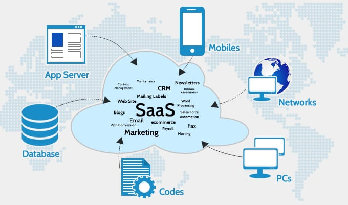
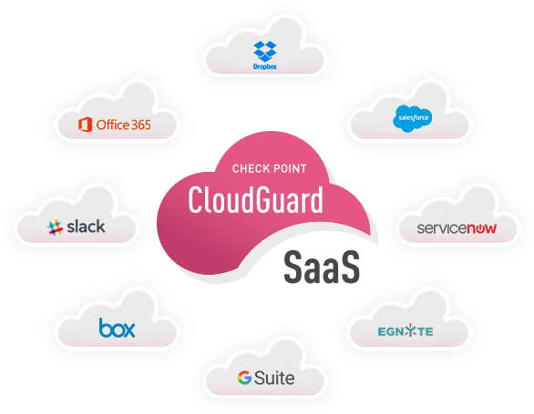
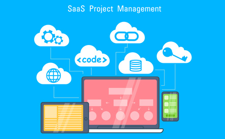
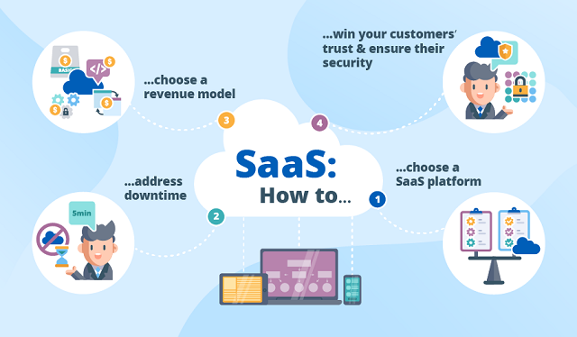

Với khái niệm vẫn còn xa lạ với nhiều doanh nghiệp, nhưng xu hướng SaaS và điện toán đám mây đang là hai mô hình dẫn đầu thế giới công nghệ. Hiện nay, nhiều công ty công nghệ của Việt Nam đã khẳng định tên tuổi và vị trí vững chắc trong lĩnh vực này.

SaaS hay Software-as-a-Service là một trong những dạng điện toán đám mây phổ biến nhất - được định nghĩa là mô hình phân phối dịch vụ ứng dụng phần mềm. Trong đó nhà cung cấp không bán sản phẩm phần mềm mà bán dịch vụ dựa trên phần mềm đó. Các nhà cung cấp SaaS sử dụng internet để cung cấp phần mềm cho người dùng cuối. Việc sử dụng thường dựa trên đăng ký, với một khoản phí định kì hàng tháng hoặc hàng năm. Người dùng SaaS thường không phải nâng cấp các giải pháp tốn kém hoặc kéo dài vì chúng dựa trên đám mây, các nâng cấp được quản lý bởi nhà cung cấp giải pháp.

SaaS được coi là mô hình 4.0 ưu việt hơn so với phần mềm on-premise - dạng phần mềm được doanh nghiệp mua lại thông qua một giấy phép vĩnh viễn. Người dùng có thể mở chạy ứng dụng thông qua trình duyệt mà không cần phải cài đặt. Office365, Gmail, Hotmail, Outlook là những saas tiêu biểu. Hay một vài phần mềm được phát triển rộng rãi bởi nhà cung cấp saas hàng đầu như Amazon web Service, Slack, Oracle, Adobe Creative Cloud, Dropbox, Google, IBM, Microsoft,…

Vì SaaS có thể được truy cập từ bất kỳ thiết bị nào có trình duyệt web và kết nối internet, nên các nhóm có thể dễ dàng sử dụng nó tại văn phòng hoặc khi đang di chuyển. Bản thân ứng dụng đám mây được lưu trữ trên máy chủ của nhà cung cấp, cho phép thiết lập ngay lập tức, đơn giản, cũng như cập nhật liền mạch mà không cần thời gian ngừng hoạt động hoặc hỗ trợ tại chỗ. Ngoài ra SaaS cũng không có thiết bị bổ sung để mua hoặc phát triển để đầu tư vào và đặc biệt không chiếm dung lượng lưu trữ trên thiết bị của khách hàng.
Các nhà cung cấp SaaS luôn thường xuyên tự động cập nhật phần mềm, bao gồm cả việc tối ưu các tính năng cũ và bổ sung thêm các tính năng cao cấp hơn. Bạn không cần một bộ phận IT luôn túc trực để xử lý vấn đề kỹ thuật trong quá trình vận hành phần mềm nữa. Từ việc đảm bảo hệ thống máy chủ chạy tốt, duy trì bảo mật đến fix các bugs phát sinh,... đều được nhà cung cấp chịu trách nhiệm. Đội ngũ tester và IT của họ làm rất tốt phần này, và bạn sẽ luôn được sử dụng dịch vụ tốt nhất từ phía họ.
SaaS giúp doanh nghiệp tiết kiệm được cả chi phí tiền mặt, thời gian, nhân lực, chi phí chuyển đổi và chi phí cơ hội.
Với mô hình SaaS, bạn không cần cài đặt và chạy các phần mềm trên hệ thống của doanh nghiệp. Điều đó giúp bạn tiết kiệm được một khoản chi phí rất lớn liên quan tới việc mua giấy phép phần mềm, lắp đặt phần cứng cũng như xây dựng hệ cơ sở dữ liệu mới. Trong suốt quá trình sử dụng, mô hình SaaS không đòi hỏi bạn phải trả thêm phí hỗ trợ và bảo trì định kỳ nào.
Hầu hết các mô hình SaaS hiện nay đều tập trung vào và bán các dịch vụ phần mềm dưới hai dạng: Freemium - cho phép bạn dùng miễn phí trước rồi trả thêm tiền để sử dụng các tính năng nâng cao, và Premium - bán theo gói dựa trên số lượng tài khoản và thời gian sử dụng. Trong cả hai trường hợp, bạn đều có quyền lựa chọn ngừng đăng ký dịch vụ SaaS bất cứ khi nào bạn muốn, và chi phí cũng ngừng luôn tại thời điểm đó.
Thời gian và nhân lực cần thiết để triển khai một phần mềm SaaS cũng tiết kiệm hơn hẳn so với giải pháp on-premise truyền thống. Với đội ngũ hỗ trợ (thường chỉ gồm 1-2 thành viên) của nhà cung cấp SaaS, họ chỉ cần tối đa là 2 ngày để thiết lập tài khoản và training sử dụng phần mềm cho toàn bộ nhân viên trong doanh nghiệp.
Mô hình SaaS cũng giúp doanh nghiệp giải bài toán chi phí chuyển đổi khi lắp đặt và áp dụng công nghệ. Phần mềm SaaS được ví như một chiếc xe bus, bạn chỉ cần bỏ ra số tiền vừa phải để được chở đi đến bất cứ nơi nào bạn muốn mà không cần mua chiếc xe mới hay quá lo lắng cho việc chiếc xe bị hỏng hóc giữa đường.
Các nhà cung cấp SaaS luôn thường xuyên tự động cập nhật phần mềm, bao gồm cả việc tối ưu các tính năng cũ và bổ sung thêm các tính năng cao cấp hơn. Bạn không cần một bộ phận IT luôn túc trực để xử lý vấn đề kỹ thuật trong quá trình vận hành phần mềm nữa. Từ việc đảm bảo hệ thống máy chủ chạy tốt, duy trì bảo mật đến fix các bugs phát sinh,... đều được nhà cung cấp chịu trách nhiệm. Đội ngũ tester và IT của họ làm rất tốt phần này, và bạn sẽ luôn được sử dụng dịch vụ tốt nhất từ phía họ.
Người dùng dễ dàng truy cập phần mềm từ bất kỳ thiết bị và trình duyệt nào có kết nối Internet vì các nhà cung cấp SaaS triển khai dịch vụ thông qua Internet. Khi doanh nghiệp đăng ký sử dụng phần mềm, bạn được phép tạo thêm tài khoản (với giới hạn số lượng tuỳ theo gói đã mua) cho nhân viên trong doanh nghiệp. Bạn và nhân viên có thể ngồi ở bất cứ đâu, tại bất cứ thời gian nào, thực hiện thao tác đăng nhập đơn giản và sử dụng các tính năng không giới hạn.
Hầu hết các phần mềm SaaS hiện nay đều được tối ưu hệ thống API - giao diện lập trình ứng dụng mở cho phép đồng nhất và trao đổi dữ liệu qua lại giữa các ứng dụng đến từ nhiều bên cung cấp khác nhau. Đó chính là cơ hội để bạn và doanh nghiệp hội nhập nhanh hơn với các công nghệ mới ngay trên chính hệ thống hiện tại của mình.
Một ưu điểm lớn của dữ liệu đám mây nói chung và SaaS nói riêng là khả năng mở rộng. Bạn dễ dàng tăng gấp đôi, gấp 3,... số lượng tài khoản hoặc tích hợp thêm các phần mềm mới mà không ảnh hưởng tới cơ sở hạ tầng hay cơ sở dữ liệu có sẵn của doanh nghiệp. Điều này đặc biệt quan trọng đối với các doanh nghiệp đang trên đà tăng trưởng nóng hoặc bạn đang có dự định mở rộng quy mô trong tương lai.
Chính bởi tập trung vào sự linh hoạt, gọn nhẹ và dễ dàng triển khai mà mô hình SaaS có một điểm yếu so với giải pháp on-premise - đó là vấn đề bảo mật. Bạn nên kiểm tra lại một lượt về bảo mật trước khi đưa ra bất cứ quyết định triển khai phần mềm SaaS nào.
Tuy nhiên, khi nền điện toán đám mây 4.0 càng phát triển thì vấn đề này càng bớt lo ngại. Đó là nhờ các nhà cung cấp SaaS chú trọng hơn vào mã hoá dữ liệu và có các điều khoản cam kết bảo mật chặt chẽ hơn trong Cam kết mức độ dịch vụ (SLA).
Người dùng cần phải kết nối internet để đăng nhập và sử dụng phần mềm SaaS và có thể bị gián đoạn bất ngờ ở những nơi internet không khả dụng.
Lợi ích được tự động cập nhật miễn phí phiên bản mới của phần mềm cũng có thể mang lại sự bất tiện. Đó là khi bạn hoặc một số nhân viên trong doanh nghiệp có thể cảm thấy bỡ ngỡ với các thay đổi trong giao diện hay tính năng nâng cao của phần mềm.

Ở bài viết này Martech Zone đã cùng các bạn tìm hiểu tổng quan về mô hình SaaS. Qua đó có thể thấy SaaS là nền tảng quan trọng trong công việc và cuộc sống hội nhập ngày nay. Martech Zone chúc các bạn sớm thành công và giải quyết vấn đề bằng mô hình SaaS hiệu quả!
Nguồn: Resources.base.vn